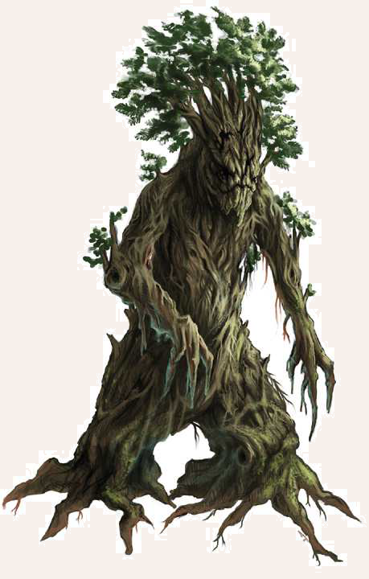

Über die Herkunft dieser baumhohen Wesen ist wenig bekannt. Stehen sie still, kann man sie auf den ersten Blick kaum von den sie umgebenden Bäumen unterscheiden, denn die 3 bis 4 Schritt großen Waldschrate tragen ihren Namen zurecht. Wie eine riesenhafte Mischung aus Mensch und Baum sehen sie aus. Auch wenn die meisten von ihnen über Arme und Beine verfügen, wuchern oftmals Äste und Zweige aus ihrem mit Borke überzogenen Leib, und tatsächlich verbirgt sie kein Fleisch, sondern Holz und Harz. Kleidung und Werkzeuge sind den Waldschraten unbekannt, aber sie verfügen trotzdem über einen zum Teil beachtlichen Verstand und eine knarzende Sprache. Waldschrate können ja nach Baumart bis zu 1.000 Jahren alt werden.
Verbreitung
Waldschrate kann man in Wäldern und Hainen überall auf dem Kontinent inden.
Am häuigsten trifft man sie jedoch in den riesigen Wäldern des Nordens an.
Bemerkenswerterweise werden Waldschrate nach der Baumart unterschieden, der sie angehören.
In den dichten Nadelwäldern des Nordens leben zumeist Tannen-, Fichten- und Kiefernschrate, die ganze Wälder für sich beanspruchen.
Man sagt Tannenschraten nach, dass sie weise und vornehm sein sollen, während Fichtenschrate für ihre Verhältnisse als geradezu link und kriegerisch gelten.
Im Gegensatz zu ihnen scheinen Kiefernschrate eher ruhige Zeitgenossen zu sein.
Die weniger langlebigen Birken- und Espenschrate suchen sich meist kleinere Haine und Waldstücke.
Birkenschrate gelten unter Waldschraten als neugierig und fast aufdringlich, während Espenschrate sehr gesellig sein sollen.
Ein besonders seltener Anblick sind die meist weiblichen Lärchenschrate, die als besonders gerechte Wesen gelten.
In Niederungen des Nordens und den mittelländischen Laubwäldern kann man hingegen eher auf Buchen- und Eichen- und selten auch Ulmenschrate treffen.
Während Buchenschrate als stark und beständig gelten, sagt man Eichenschraten nach, gerecht, aber streitbar zu sein.
Ulmenschrate wiederum sollen über geradezu erstaunliche magische Fähigkeiten verfügen.
Selbst unter Waldschraten werden jedoch Eschenschrate mit Misstrauen beäugt, die als düster und nachtragend gelten.
Zu guter Letzt seien noch Eibenschrate genannt, von denen es heißt, dass sie über Jahrhunderte hinweg lange Wanderungen durch Aventurien unternehmen.
Im tiefen Süden gibt es zudem Mohagoni- und Korallenbaumschrate, die aber nur den Stämmen des Regengebirges bekannt sind.
Auf Maraskan sollen zudem einzelne Eisenbaumschrate durch den Dschungel wandern, denen man Stolz und Unverwüstlichkeit nachsagt.
Lebensweise
Waldschrate leben meist alleine oder in kleinen Familien.
Allen gemein ist die Liebe zum Wald und zur Natur.
Sie verteidigen ihren Wald erbittert gegen Störenfriede, die es wagen, die Axt an einen ihrer Bäume zu legen.
Meist beobachten sie Wanderer reglos und werden oftmals mit Bäumen verwechselt.
So lassen sie Holzfäller und Köhler nah an sich heran kommen, um dann unvermittelt zuzuschlagen.
Einige Waldschrate verstehen auch menschliche Sprachen, besonders Birken- und Espenschrate, die sich bisweilen in der Nähe von Rastplätzen oder menschlichen Behausungen aufhalten, um die in ihren Augen stets geschäftigen kleinen Fleischlinge zu beobachten.
Waldschraten fällt es jedoch äußerst schwer, Menschen von Orks oder Goblins zu unterscheiden oder gar einzelne Menschen wiederzuerkennen.
Daher machen sie oft die einen für die Taten der anderen verantwortlich.
Einige Waldschrate scheinen im direkten Kontakt mit Feenwesen, Kobolden oder Einhörnern zu stehen oder freundschaftliche Verhältnisse zu Trollen und Druiden zu plegen.
In unregelmäßigen Abständen treffen sich Waldschrate zum Ratbazamithing (schratig: mächtige, alle versorgende Sache/Gespräch/Beratung), einem großen Treffen, in dem für Waldschrate wichtige Themen besprochen werden.
Anscheinend verfügen die Waldschrate zudem über eine Methode, über weite Strecken miteinander zu kommunizieren, doch bisher konnte kein Gelehrter herausinden, ob es Zauberwerk, das Rauschen der Blätter oder der Flug der Pollen ist, mit dem sie sich verständigen.
Waldschrat
Größe: 4,00 bis 8,00 Schritt Schulterhöhe
Gewicht: 500 bis 2.500 Stein
Eigenschaften:
MU 13
KL 10
IN 11
CH 11
FF 11
GE 11
KO 30
KK 30
LeP: 250
AsP: -
KaP: -
INI: 12+1W6
SK: 1
ZK: 10
GS: 11
VW: 6
Hieb:
AT: 14
TP: 2W6+4
RW: lang
Tritt:
AT: 12
TP: 3W6+6
RW: mittel
RS/BE: 4/0
Aktionen: 1
Vor- und Nachteile: Angst vor Feuer III
Sonderfertigkeiten: Mächtiger Schlag (Hieb, Tritt; bei erfolgreichem Trittangriff müssen Gegner der Größe mittel und kleiner eine Probe auf Kraftakt erschwert um 5 bestehen, sofern sie nicht ausgewichen sind; ansonsten erhalten sie den Status Liegend.),
Schildspalter (Hieb, Tritt),
Wuchtschlag I (Hieb, Tritt).
Talente:
Klettern 4 (13/11/30),
Körperbeherrschung 2 (11/11/30),
Kraftakt 13 (30/30/30),
Schwimmen 10 (11/30/30),
Selbstbeherrschung 10 (13/13/30),
Sinnesschärfe 7 (10/11/11),
Verbergen 7 (13/11/11),
Einschüchtern 9 (13/11/11),
Menschenkenntnis 1 (10/11/11),
Überreden 2 (13/11/11),
Willenskraft 9 (13/11/11)
Anzahl: 1 oder 1W6+1 (Waldschrat-Thing)
Größenkategorie: riesig
Typus: Planze, nicht humanoid
Kampfverhalten: Waldschrate sind eigentlich friedfertige Wesen. Zerstört man jedoch ihren Wald, können sie ausgesprochen aggressiv werden. Meist warten sie als Baum getarnt ab, bis ein Gegner in ihrer Nähe ist, um ihn zu überraschen und zu zertrampeln.
Flucht: Verlust von 50% der LeP
Beute: Holz (1 bis 30 Silbertaler, je nach Art)
Sonderregeln: Empindlichkeit gegenüber Feuer: Schaden durch Feuer wird verdoppelt.
Tarnung: Wenn Waldschrate bewegungslos im Wald stehen, sind sie sehr leicht mit Bäumen zu verwechseln. Sie erhalten in diesem Fall eine Erleichterung auf Verbergen (sich Verstecken) von 3.
| LeP-Verlust | Schmerz | |
|---|---|---|
| 188 LeP (¾) | +1 Schmerz | |
| 125 LeP (½) | +1 Schmerz | |
| 63 LeP (¼) | +1 Schmerz | |
| 5 LeP und weniger | +1 Schmerz |
| Pflanzenkunde | ||
|---|---|---|
| QS1 | Waldschrate wirken oft wie Bäume, wenn sie sich nicht bewegen. | |
| QS2 | Durch Holzeinschlag und Feuer im Wald fühlen sich Waldschrate oft provoziert. | |
| QS3 | Waldschrate sind geistig recht träge und brauchen oft einige Zeit, um sich zu entscheiden. |